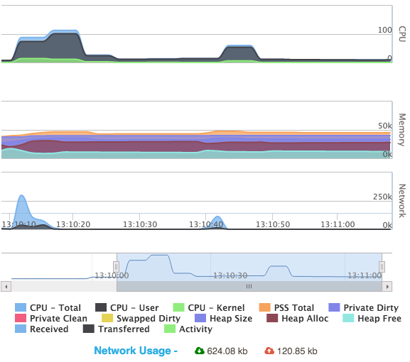

9. Performance Testing¶
Your customers are using a variety of devices with varying hardware configuration, a range of Android versions (yes Android fragmentation is for real. Click here http://developer.android.com/about/dashboards/index.html for the official numbers from Android and check here for an even more in-depth analysis of what things look like http://opensignal.com/reports/2015/08/android-fragmentation/ ). We missed mentioning that many (in fact, most) manufacturers create their own flavor using stock Android.
In such a situation, it is important that you ensure that your app runs (without problems) on the devices that your customers are using. One of the most important aspects of mobile app quality is the performance of the app and at RobusTest we adopt a performance-first approach to mobile app testing. What this means for you is that whether you are in a manual test session or are running your automation tests, performance metrics of the app is just a click away.
Manual Testing

When you are running your manual tests for exploratory testing or executing your tests on the device, you have the option of monitoring the memory, CPU and network usage for your app. You can monitor both real time as well as cumulative network usage.
Memory Usage
You can get all the important memory usage parameters from the performance stats section. You can view the following link to investigate each memory usage metric http://developer.android.com/tools/debugging/debugging-memory.html
CPU Usage
In the CPU Usage section you can track the total CPU usage for your app. Do not panic when it goes over 100% - that happens in case of multi-core processors. On second thoughts, an over 100% usage can be a matter for concern especially if there are other processes/applications fighting for CPU time.
Network usage
Monitor the amount of data your application is exchanging - consuming and uploading - in real-time as well for a particular test session.